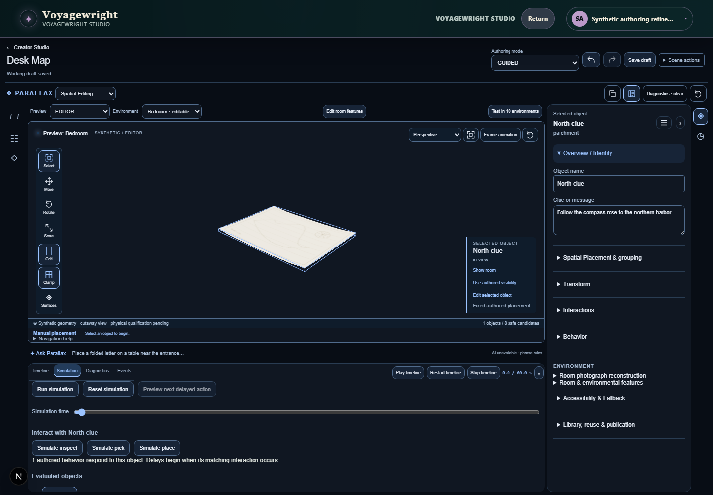
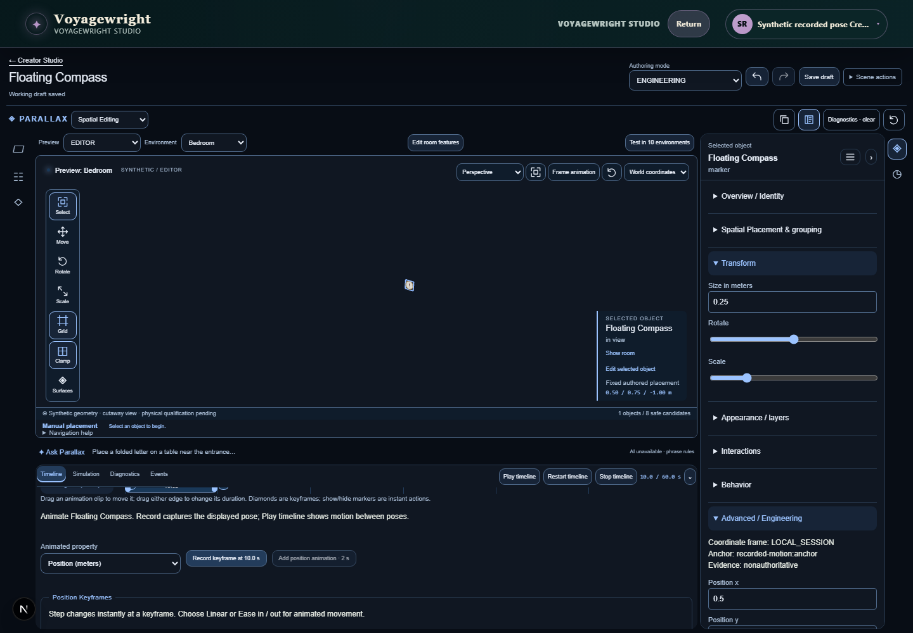
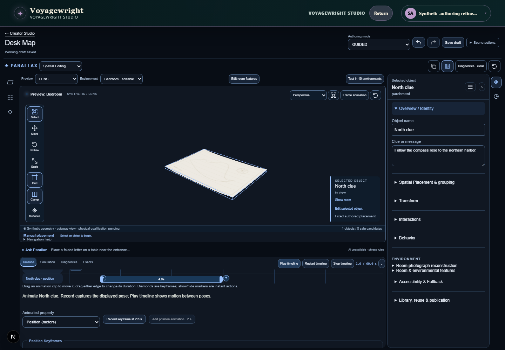
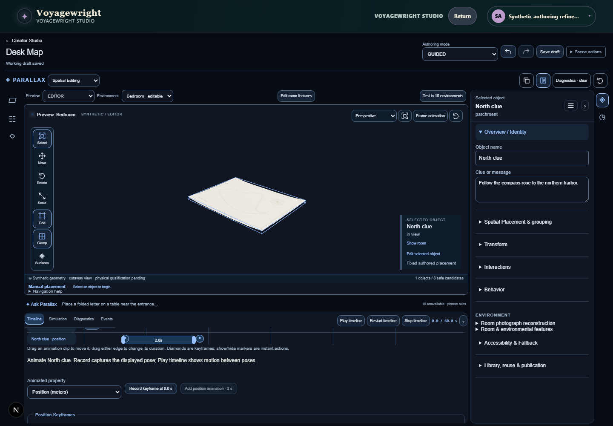
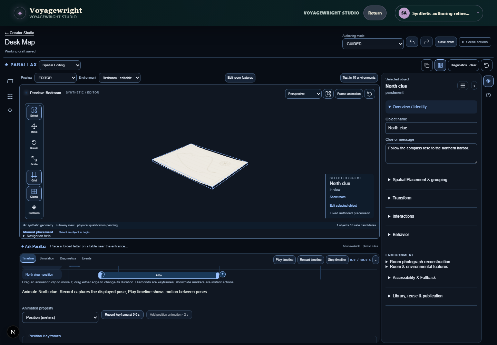
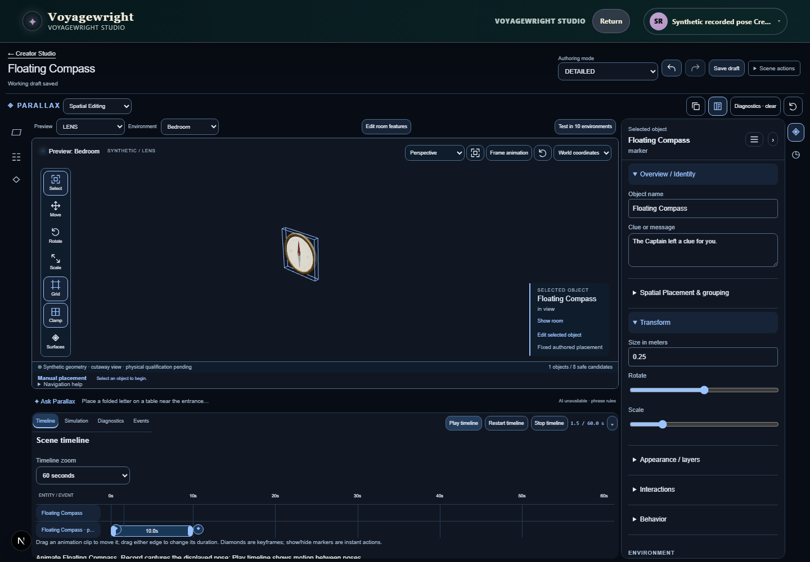
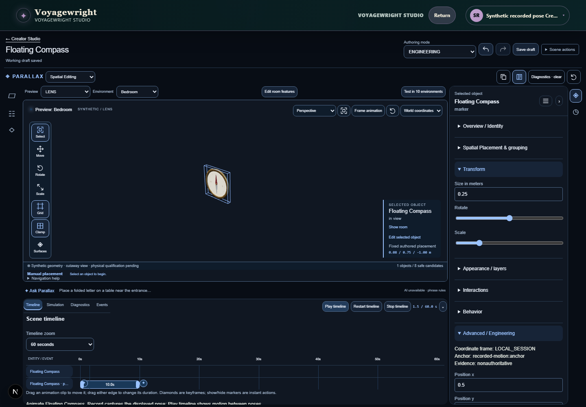
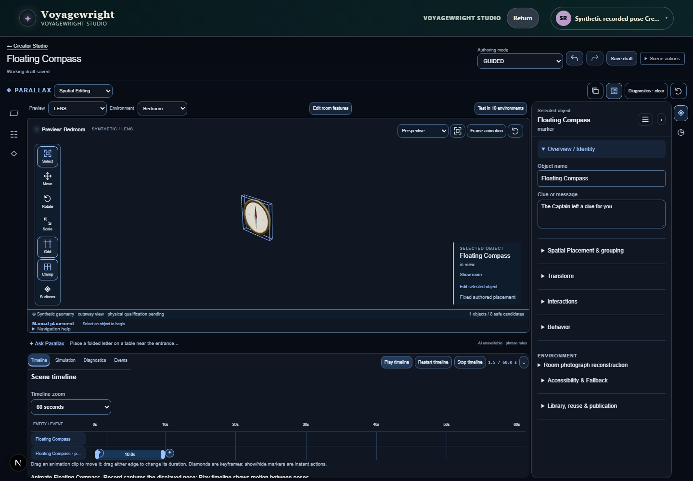
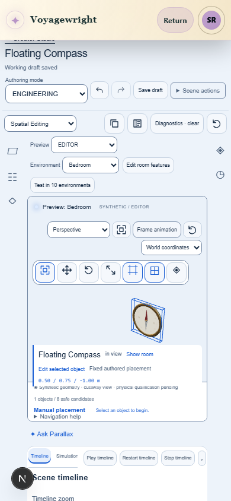
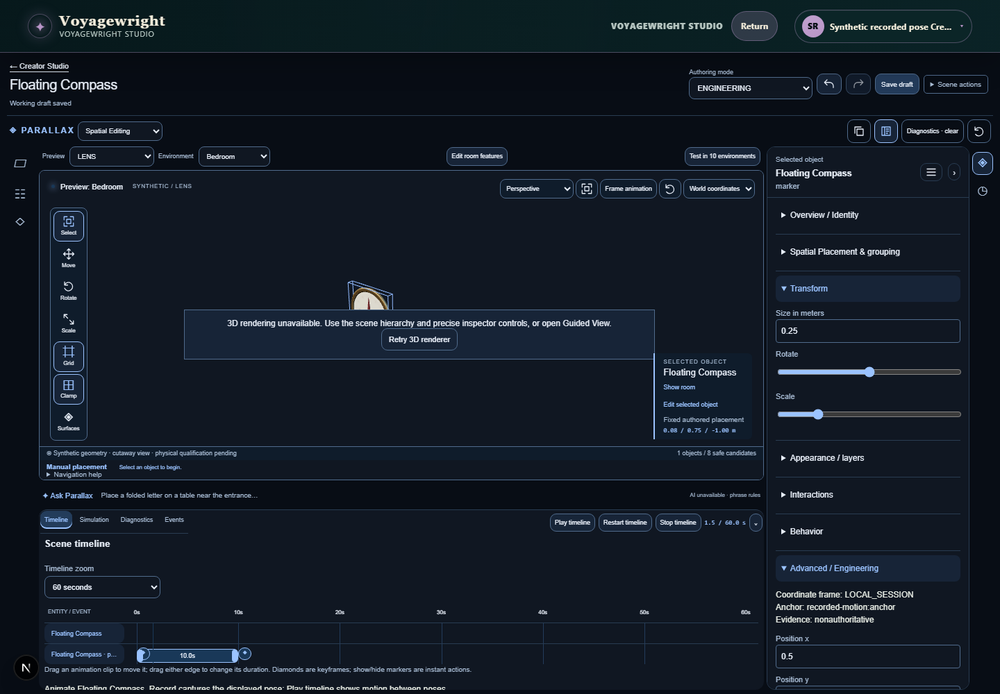

Studio authoring feedback
Actual development application. Synthetic unpaid fixtures. Candidate 19c40ef74f9f0122a247a1203be63ae78f0170a0. Focused capture; owner and full-overhaul acceptance are not claimed.
checks-parallax-authoring-refinem-099f2-assets-through-saved-replay-chromium-video.webm
checks-parallax-authoring-refinem-87784-and-rebuilds-only-that-prop-chromium-video.webm
checks-parallax-authoring-refinem-b728d-modes-and-renderer-recovery-chromium-video.webm
refinement-footprint-identity.png

refinement-hidden-editing-recovery.png

refinement-instant-step-explanation.png

refinement-interpolated-object.png

refinement-live-clip-drag.png

refinement-live-duration-resize.png

refinement-motion-detailed.png

refinement-motion-engineering.png

refinement-motion-guided.png

refinement-phone-requested-fallback.png

refinement-phone-restored-motion.png

refinement-renamed-graph.png

refinement-renderer-failure-engineering.png

refinement-small-distant-object-recovery.png

refinement-timeline-context-menu.png